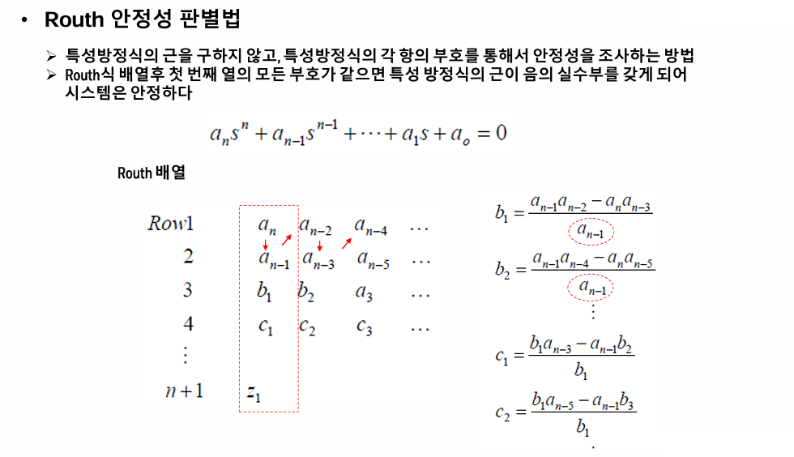
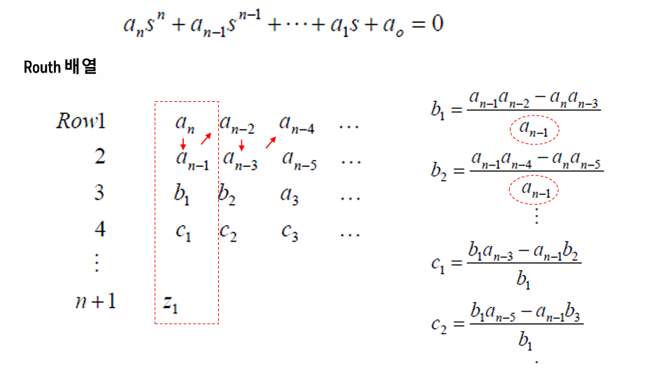
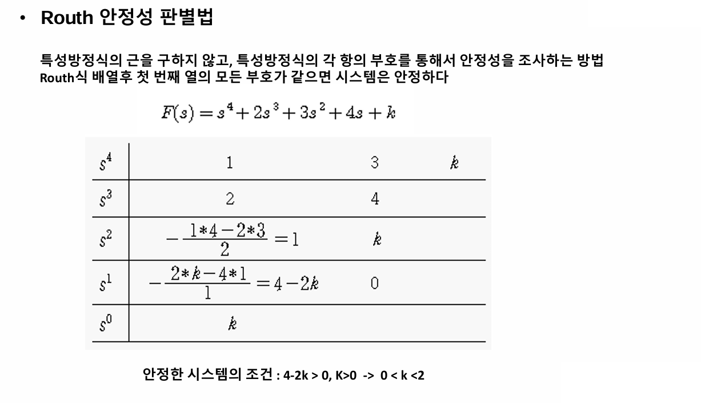
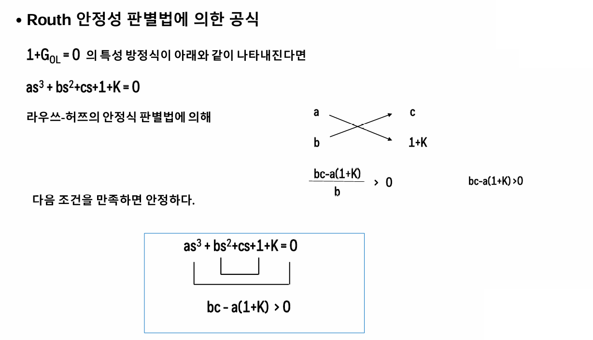
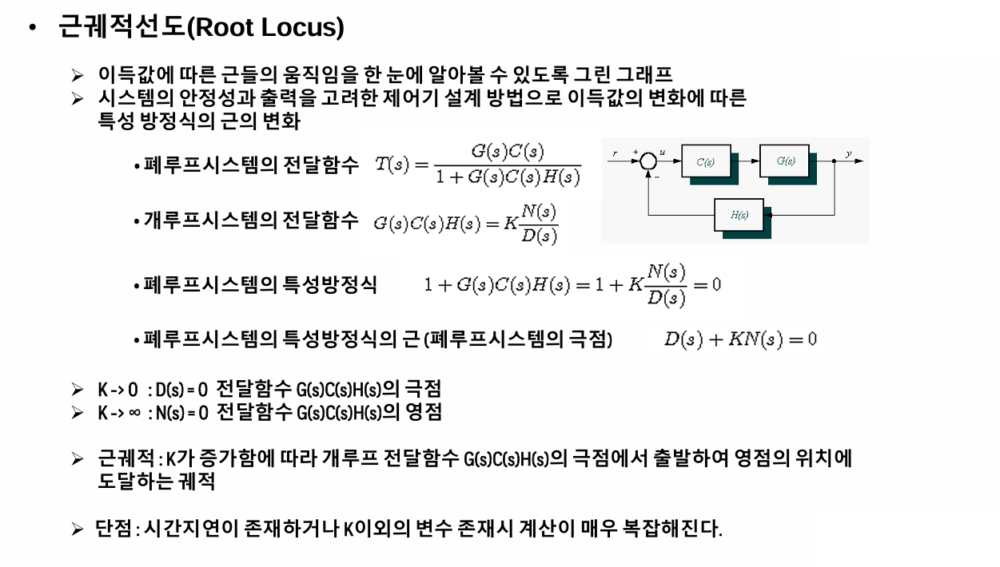
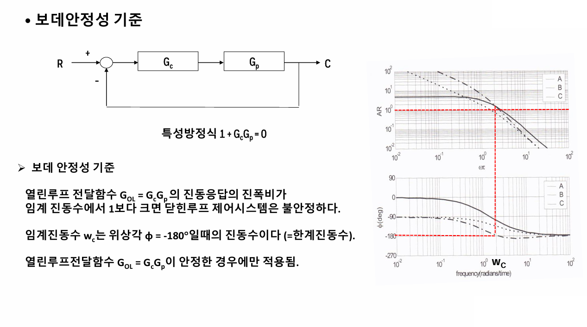
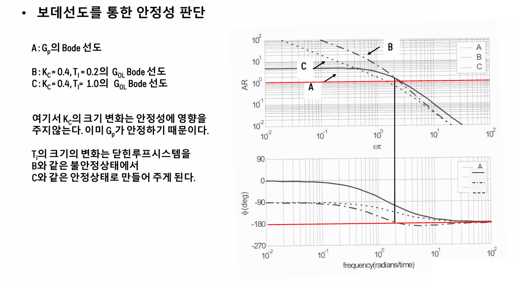
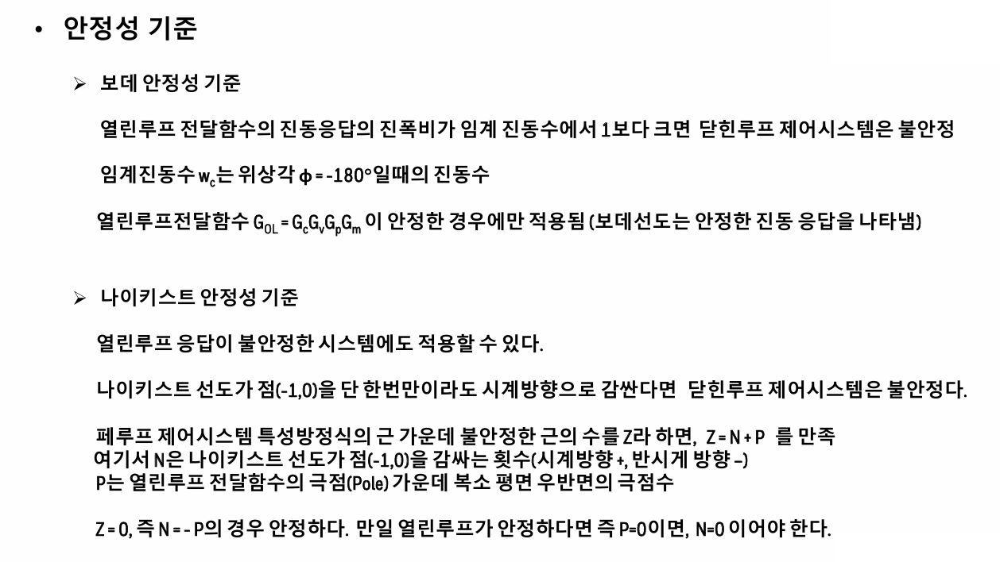

안정성 2
1)라우스 안정성 판별법

특성방정식의 근을 구하지 않고, 특성방정식의 각 항의 부호를 통해서 안정성을 조사하는 방법
라우스 식 배열 후 첫 번째 열의 모든 부호가 같으면 특성 방정식의 근이 음의 실수부를 가져 시스템은 안정하다.



만약 3차가 주어진다면 라우스 허쯔 판별법을 써서 bc-a(1+k)>0 이면 안정한 것이다.
이제 근궤적도를 이용한 안정성 판별법을 살펴보자. 이는 요즘에는 잘 안쓰인다.

특성방정식이 0이 되는 근들을 직접 구할 것인데, 이때 비례제어에서 K값이 변함에 따라 근의 값이 바뀐다. 따라서 제어기 이득을 변화시켜가면서 근이 어떻게 움직이는 가를 한눈에 알아볼 수 있게 그린 그래프가 근궤적도이다.
즉 이득값의 변화에 따른 특성방정식의 근의 변화를 알아보자는 것이다. K=0에서부터 점점 무한대로 늘어가는데, K가 0일때 근은 전달함수의 극점이고, K가 무한대일 때 근은 전달함수의 영점이다. 즉 근 궤적은 처음에 극점에서 시작하여 영점을 향해 나아간다. 이 사이의 궤적을 근궤적이라고 한다.
이 방식은 시간지연이 존재하거나 K이외 변수 존재시 계산이 매우 복잡해지는 단점이 있다. 따라서 근을 굳이 구하지 않고도 안정성을 판정할 수 있는 방법이 필요하다.
이에 따라 보데 안정성 기준이 가장 많이 채택되고 있으며 가장 널리 쓰인다.


